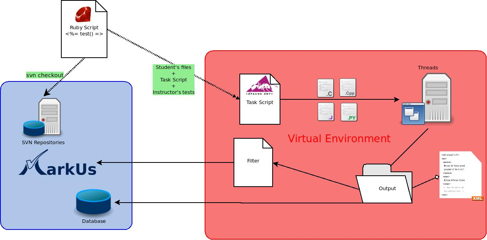

Presenter Notes
MarkUs
MarkUs (pronounced "mark us") is an open-source tool which recreates the ease and flexibility of grading assignments with pen on paper, within a web application. It also allows students and instructors to form groups, and collaborate on assignments.
The MarkUs project is written in Ruby using the Ruby on Rails framework. MarkUs is based on various Open Source softwares, such as Subversion, PostgreSQL/MySQL…
Presenter Notes
Web Application
- Web browser
Presenter Notes
Installation
Prerequisites
- GNU/Linux installation (
Ubuntu,Debian,Fedora,Mandriva, …) - MySQL/PostgreSQL (needed for PDF conversion or test framework) and headers libraries
- Ruby 1.8.7 and Rubygems ( >= 1.3.7)
- git and a Github account
- svn and libsvn-ruby (svn Ruby bindings)
Presenter Notes
Databases (1/4)
MarkUs stores informations in database
- PostgreSQL
- MySQL
Only for development and limitated (non-concurrency access)
- SQLite
Presenter Notes
Databases (2/4)
Configuration
config/database.yml
1 development:
2 adapter: mysql
3 encoding: utf8
4 database: markus_development
5 username: markus
6 password: secret_p@ssw0rd
7
8 test:
9 adapter: mysql
10 encoding: utf8
11 database: markus_test
12 username: markus
13 password: secret_p@ssw0rd
14
15 production:
16 adapter: mysql
17 encoding: utf8
18 database: markus_production
19 username: markus
20 password: secret_p@ssw0rd
Presenter Notes
Databases (3/4)
Interact with database
Create the database with bundle exec rake db:create, the load the schema with bundle exec rake db:schema:load.
You can also populate the database with faked datas (very usable for development) : bundle exec rake db:populate
By default, Rails will focus on development environment : it is the development database that will be created. To work with other modes; consider using the RAILS_ENV=production or RAILS_ENV=test variable before each bundle statement.
Presenter Notes
Databases (4/4)
Schema
Rails keep a schema of the database in a file called schema.rb.
db/schema.rb:
1 # This file is auto-generated from the current state of the database. Instead
2 # of editing this file, please use the migrations feature of Active Record to
3 # incrementally modify your database, and then regenerate this schema definition.
4 # It's strongly recommended to check this file into your version control system.
5
6 ActiveRecord::Schema.define(:version => 20110313200240) do
7
8 create_table "annotation_categories", :force => true do |t|
9 t.text "annotation_category_name"
10 t.datetime "created_at"
11 t.datetime "updated_at"
12 t.integer "assignment_id", :null => false
13 end
14
15 add_index "annotation_categories", ["assignment_id"],
16 :name => "index_annotation_categories_on_assignment_id"
Presenter Notes
Pro tips
Find code
find app/ -name "*" -exec grep -Hn --color "def index" {} \;
Presenter Notes
Migrations (1/3)
Load schema in database
Ruby on Rails will load the schema in the database (the backend doesn't matter) with bundle exec rake db:schema:load.
Populate the database with fake datas
You can also populate the database with students, graders, admin, assignments with bundle exec rake db:populate. Take a look at db/populate/*.rb files.
Presenter Notes
Migrations (2/3)
Agile development with migrations
Migrations and iterations are the agile way to construct databases.
db/migrate/20100812195558_create_test_file.rb:
1 class CreateTestFile < ActiveRecord::Migration
2 extend MigrationHelpers
3
4 def self.up
5 create_table :test_files do |t|
6 t.column :filename, :string
7 t.column :assignment_id, :int
8 t.column :filetype, :string
9 t.column :is_private, :boolean
10 t.column :created_at, :timestamp
11 t.column :updated_at, :timestamp
12 end
13 add_index :test_files, [:assignment_id, :filename],
14 :name => "index_test_files_on_assignment_id_and_filename",
15 :unique => true
16 end
17
18 def self.down
19 drop_table :test_files if table_exists?(:test_files)
20 end
21 end
Presenter Notes
Migrations (3/3)
Agile development with migrations
Run or rollback migrations with bundle exec rake db:migrate and bundle exec rake db:rollback.
It creates a Ruby schema file, used by the Ruby on Rails Model` to interact with objects.
db/schema.rb:
1 # This file is auto-generated from the current state of the database. Instead
2 # of editing this file, please use the migrations feature of Active Record to
3 # incrementally modify your database, and then regenerate this schema definition.
4 # It's strongly recommended to check this file into your version control system.
5
6 ActiveRecord::Schema.define(:version => 20110313200240) do
7
8 create_table "annotation_categories", :force => true do |t|
9 t.text "annotation_category_name"
10 t.datetime "created_at"
11 t.datetime "updated_at"
12 t.integer "assignment_id", :null => false
13 end
14
15 add_index "annotation_categories", ["assignment_id"],
16 :name => "index_annotation_categories_on_assignment_id"
Presenter Notes
Bundler (1/2)
Gemfile and Gem management
Librairies are called gem and there is a tool to manage them, called Rubygems.
Put all needed gems in the Gemfile and run bundle install to install them.
Gemfile:
1 # Make sure to decleare at least one 'source'
2 source 'http://rubygems.org'
3
4 # Bundler requires these gems in all environments
5 gem "rails"
6 gem 'exception_notification'
7 #gem "prototype-rails" Will be needed with Rails3.1
8 gem "db_populate"
9 gem "rubyzip"
Presenter Notes
Bundler (2/2)
Gemfile and Gem management
Gems dependencies and configurations are stored in Gemfile.lock, generated with the bundle install command
Gemfile.lock:
1 GEM
2 remote: http://rubygems.org/
3 specs:
4 rack-mount (0.6.14)
5 rack (>= 1.0.0)
6 rack-test (0.5.7)
7 rack (>= 1.0)
8 railroady (1.0.2)
9 rails (3.0.10)
10 actionmailer (= 3.0.10)
11 actionpack (= 3.0.10)
12 activerecord (= 3.0.10)
13 activeresource (= 3.0.10)
14 activesupport (= 3.0.10)
15 bundler (~> 1.0)
16 railties (= 3.0.10)
Presenter Notes
Git (1/5)
SCM used for MarkUs source code
Git is a fast, scalable, distributed revision control system with an unusually rich command set that provides both high-level operations and full access to internals.

Presenter Notes
Git (2/5)
Example of workflow

Presenter Notes
Git (3/5)
Basics
$ git init
$ git add .
$ git commit -m "My first backup"
Roll back
$ git reset --hard
Save the state
$ git commit -a -m "Another backup"
$ git add readme.txt Documentation
Presenter Notes
Git (4/5)
Remove
Similarly, if you want Git to forget about certain files:
$ git rm kludge.h obsolete.c
$ git rm -r incriminating/evidence/
Rename
$ git mv bug.c feature.c
Log
$ git log
$ git reset --hard 766f
Presenter Notes
Git (5/5)
Change state
$ git checkout 82f5
$ git checkout master
Commit everything
$ git commit -a
Clone a repository
$ git clone git://server/path/to/files
What changed?
$ git diff
$ git diff 1b6d "master~2"
$ git whatchanged --since="2 weeks ago"
Presenter Notes
Debugger (1/2)
Breakpoint
Just put the word debugger in a portion of code called by RoR
app/controllers/sections_controller.rb:
1 def index
2 @sections = Section.find(:all)
3 end
became:
1 def index
2 debugger
3 @sections = Section.find(:all)
4 end
In your terminal:
!shell
Completed 200 OK in 853ms (Views: 536.6ms | ActiveRecord: 91.5ms)
/mnt/data/MarkUs/Markus/app/controllers/sections_controller.rb:11
@sections = Section.find(:all)
(rdb:1)
Presenter Notes
Debugger (2/2)
irb
Then just press irb you will be in an irb (Interactive RuBy) shell.
You can have access to the same variables Ruby has access.
In your terminal:
!shell
(rdb:1) irb
irb(#<SectionsController:0x7f8da4c1ab68>):001:0> @section
=> nil
irb(#<SectionsController:0x7f8da4c1ab68>):002:0> Section.new
=> #<Section id: nil, name: nil, created_at: nil, updated_at: nil>
irb(#<SectionsController:0x7f8da4c1ab68>):003:0> s = Student.find(:all)
=> [#<Student id: 3, user_name: "c8mahler", last_name: "Mahler",
first_name: "Gustav", grace_credits: 0, type: "Student", created_at:
"2011-12-22 14:32:02", updated_at: "2011-12-22 14:32:02", hidden: false,
api_key: nil, section_id: nil, notes_count: 0>, #<Student id: 4, user_name:
"c9magnar", last_name: "Magnard", first_name: "Alberic", grace_credits: 0,
type: "Student", created_at: "2011-12-22 14:32:02", updated_at: "2011-12-22
14:32:02", h…
Presenter Notes
MarkUs-PDF (1/3)
State of the art
Summer 2009, Anton B., a Canadian Student in the University of Toronto, wrote the PDF concersion mechanism.
Ask your mentor ;-) --> Benjamin V.
Please read:
- Blog posts about PDF conversion
Interesting files
Presenter Notes
MarkUs-PDF (2/3)
How it works
There is a SubmissionCollectorProcess, collection submissions and converting PDF to images, using ImageMagick.
ImageMagick is called directly from command line
app/models/submission_file.rb:
1 `convert -limit memory
2 #{MarkusConfigurator.markus_config_pdf_conv_memory_allowance} -limit map 0
3 -density 150 -resize 66% #{File.join(storage_path, self.filename)} -append
4 #{file_path} >> #{File.join(RAILS_ROOT, "log", "export-pdf.log")}`
The issue is here !
Presenter Notes
MarkUs-PDF (3/3)
TODO ?
Presenter Notes
MarkUs-Plagiat (1/3)
State of the art
Last year, two students (Benjamin T. and Shion K.) worked on plagiarsim.
They studied different plagiarism tools and the way to connect them to MarkUs.
Ask your mentor ;-) --> Nelle V.
Please read:
- Benjamin T. and Shion K. PRGOU report on plagiarism (PAPPL-2010)
- Bertrand M, Guillaume B, Claire V., Charline A., Benjamin W, Karim E. report about the test framework (PGROU-2011), focusing on the Ant part
- Blog posts about plagiarism
Presenter Notes
MarkUs-Plagiat (2/3)
How does the Test Framework works ?

Presenter Notes
MarkUs-Plagiat (3/3)
Ant ?
Apache Ant is a software tool for automating software build processes. It is similar to Make but is implemented using the Java language, requires the Java platform, and is best suited to building Java projects.
The most immediately noticeable difference between Ant and Make is that Ant uses XML to describe the build process and its dependencies. By default the XML file is named build.xml.
Be careful with external linking
- licenses issues
- Available on different kind of OS ? (Unices such as GNU/Linux and MAC OS X, Microsoft Windows)
- Is it still maintened ?
Pro tip
Don't hesitate to ask your mentor